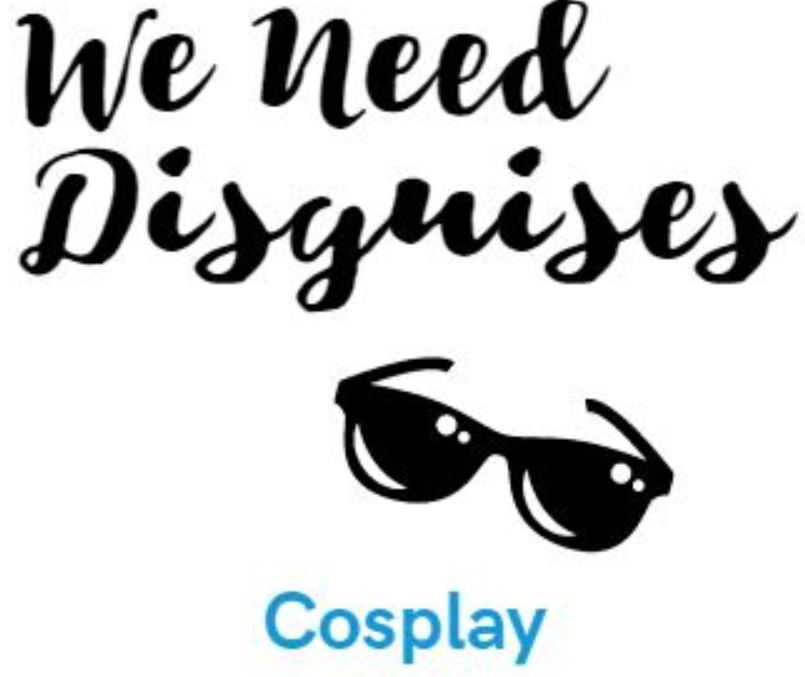

| Tool | Why |
|---|---|
| For Foam, 3D Prints and Worbla | |
| Box Cutter | A box cutter is going to be your best friend when working with foams. It makes getting around curves and tight places easier than trying to use scissors |
| Dremel | A Dremel or any other rotary tool is going to be used for carving and sculpting of your foam. |
| Sandpaper/Sanding sponge | Sandpaper is very useful. You can technically use it for carving foam it's just not recommended. What sandpaper is most useful for is for pulling of finishes from things such as PVC so it can be painted. Another thing that Sandpaper is good for is taking off layer lines off your 3D prints to give them that smooth finish that you see on 3D printed armor sets. |
| Heat Gun | Heat guns are one of the most important tools that you could have. They're used for foam to heat seal it so it's not porous allowing it to be primed quicker and be painted with less paint. They're also used for heating the foam so it can be shaped into something it's not flat. Heat guns are also used when working with worbla making it shapeable as well. |
| Pins | Pins can be used for more than just sewing. They can be used when tracing your patterns on to softer materials like foams. and they're useful when styling wigs, being used to hold the wig onto the wig head preventing movement. |
| Metalic Markers | Many EVA foams are black, having a nice metalic marker is the idea for tracing patterns on to it. Silver is ideal. |
| For Electonics | |
| Soldering Iron | Soldering Iron is a must need if you are planning on putting lights to your costume. It's the tool you need to attach all the wires to the microchip and LED's |
| Colored LED Wires | Colored Wires are also needed if you want to put Lights. The wires are the equipment that makes the connections between your microchip and LED lights. The colors are highly recommended so you can tell the difference between power, ground |
| Wire Strippers and Cutters | Wire Strippers and cutters are needed to cut down the wires your using for LED lights and the strippers are needed to pull of the wax outer layer of the colored wires so when you solder the correct connections are made. |
| Wire Strippers and Cutters | Wire Strippers and cutters are needed to cut down the wires your using for LED lights and the strippers are needed to pull of the wax outer layer of the colored wires so when you solder the correct connections are made. |
| Shrink Tubing | Shirk tubing is nice when soldering it's something that can hold all your wires together making them more compact, therefore easier to hide inside your costume. |
| Adafruit Trinket | Adafruit Trinket is the microchip that you should use to program your LEDs it's small and compact. |
| For Painting | |
| Air brush | Air brush is useful for large paints. When you paint with an Air brush it prevents visible brush marks giving your paint a more natural look. |
| Brushes | Having paint brushes is straight forward, they used for detail painting, but also if you get some cheap ones or some acid brushes they used for spreading and applying things like primers and glues. |
| Craft/Sewing/Hair Scissors | Different scissors do better at different things never use a pair of scissors for a task that they were intended for otherwise they will dull and become useless quickly |
| Miscellaneous | |
| Hot Glue Gun | For glueing...even wig hair |
| Wig Head | If you are interested in any form of wig styling, you'll need a wig head. When buying a wig head get a 'male' wig head because they're closest to a normal sized human head. |
| Wig Head Clamp | Wig head clamps are a necessity when it comes to wig styling wigs when it will hold your wig head in place making it possible to style it, otherwise, the Styrofoam will be too light and fall over. |
